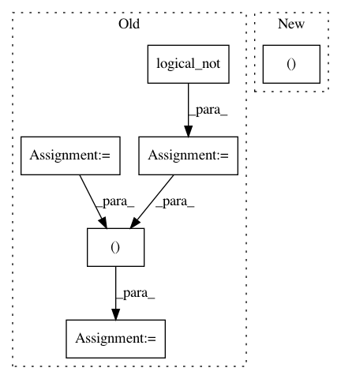

812322ed8d42e550fda41d8df54d62deb13a1aca,tpot/builtins/feature_transformers.py,ContinuousSelector,transform,#ContinuousSelector#Any#,145
Before Change
selected = auto_select_categorical_features(X, threshold=self.threshold)
n_features = X.shape[1]
ind = np.arange(n_features)
sel = np.zeros(n_features, dtype=bool)
sel[np.asarray(selected)] = True
not_sel = np.logical_not(sel) // Non-categorical features
X_sel = X[:, ind[not_sel]]
n_selected = np.sum(sel)
if n_selected == 0:
// No features selected.
After Change
array-like, {n_samples, n_components}
selected = auto_select_categorical_features(X, threshold=self.threshold)
_, X_sel, n_selected, _ = _X_selected(X, selected)
if n_selected == 0:
// No features selected.
In pattern: SUPERPATTERN
Frequency: 3
Non-data size: 6
Instances
Project Name: EpistasisLab/tpot
Commit Name: 812322ed8d42e550fda41d8df54d62deb13a1aca
Time: 2017-09-06
Author: weixuanf@upenn.edu
File Name: tpot/builtins/feature_transformers.py
Class Name: ContinuousSelector
Method Name: transform
Project Name: EpistasisLab/tpot
Commit Name: 812322ed8d42e550fda41d8df54d62deb13a1aca
Time: 2017-09-06
Author: weixuanf@upenn.edu
File Name: tpot/builtins/one_hot_encoder.py
Class Name:
Method Name: _transform_selected
Project Name: vc1492a/PyNomaly
Commit Name: 2526879b1f941c887eeb24a267b5ea010e20d5d7
Time: 2017-12-17
Author: vc1492a@gmail.com
File Name: PyNomaly/loop.py
Class Name: LocalOutlierProbability
Method Name: _ssd